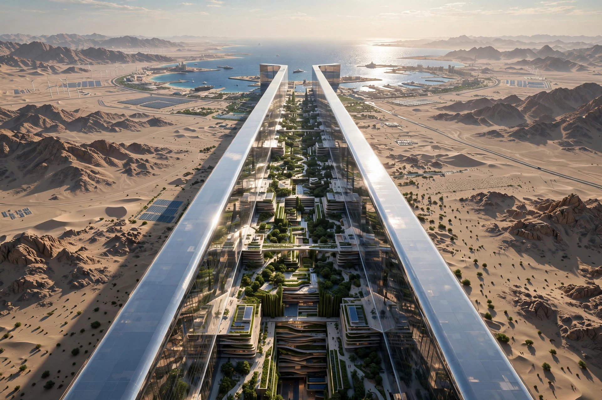

| Neom | |
|---|---|
| Country | Saudi Arabia |
| Province | Tabuk Province |
| Announced | 24 October 2017 |
| Area | 26,500 km² |
| Promoter | Public Investment Fund; Crown Prince Mohammed bin Salman |
Neom (styled NEOM; Arabic: نيوم, Niyōm) is a planned urban area and megaproject in Tabuk Province in northwestern Saudi Arabia, on the Red Sea coast near the borders with Egypt and Jordan. Announced by Crown Prince Mohammed bin Salman in October 2017 as the flagship of the Saudi Vision 2030 program to diversify the economy away from oil, the project is planned to cover 26,500 km² and be powered entirely by renewable energy.

Neom's announced regions include The Line, a proposed 170-kilometre-long linear city of two parallel 500-metre-high mirrored buildings intended to house nine million people with no cars or streets; Oxagon, an octagonal port and industrial city; Trojena, a mountain resort in the Sarawat range awarded the 2029 Asian Winter Games; and Sindalah, a luxury island resort in the Red Sea, the first region to open (October 2024). Other announced destinations include Leyja, Epicon, Siranna, Utamo, Norlana, Aquellum, Zardun, Xaynor, Elanan, Gidori, Treyam and Jaumur.
Initial funding was announced at $500 billion from the Public Investment Fund and investors, though reporting by the Wall Street Journal and Bloomberg suggested internal cost estimates reaching far higher, and The Line's first phase was reportedly scaled back by 2024 to a few kilometres for completion by 2030. The project has drawn criticism over the forced displacement of the local Howeitat tribe — activist Abdul Rahim al-Huwaiti was killed by security forces in 2020, and three tribesmen received death sentences — and from architects and engineers sceptical of The Line's feasibility. Construction work employs a huge migrant workforce; investigations have reported high numbers of worker deaths, which Saudi authorities dispute.
The Line · Saudi Vision 2030 · Mohammed bin Salman · Public Investment Fund